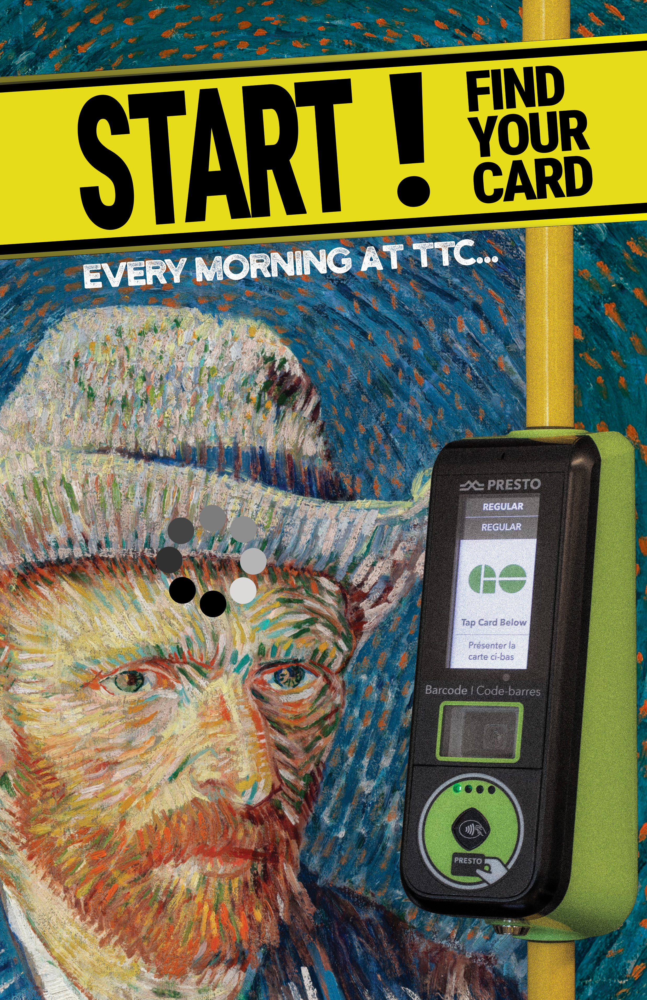
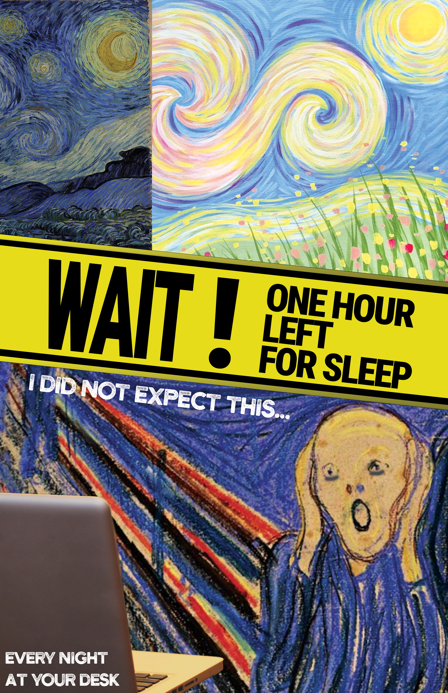
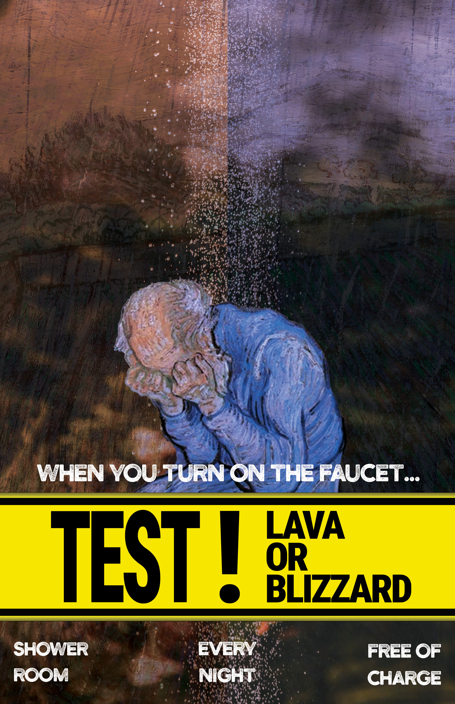
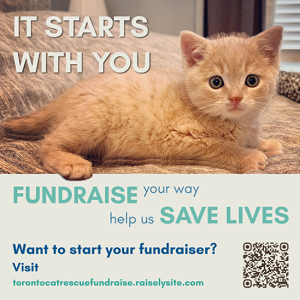
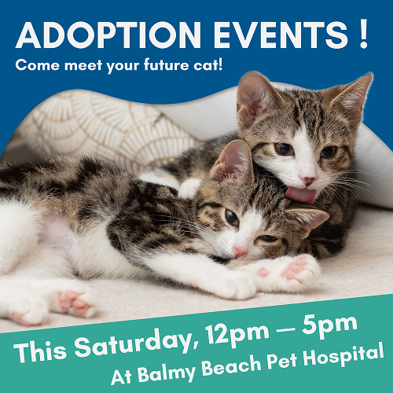
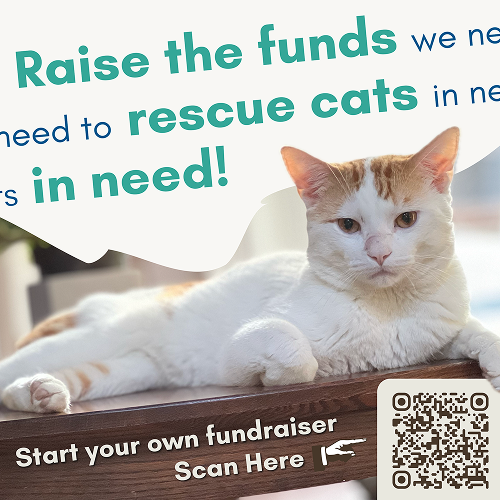
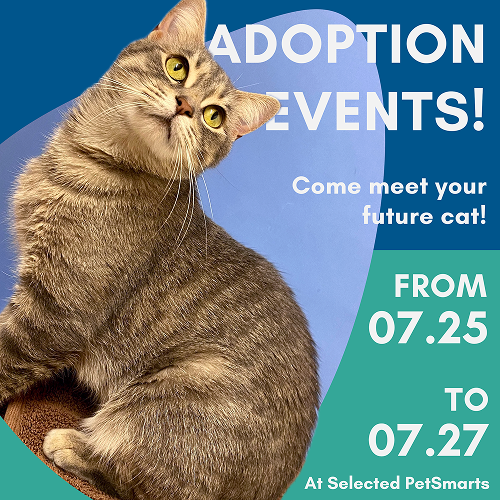
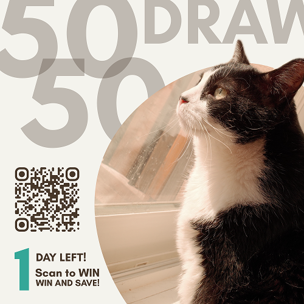
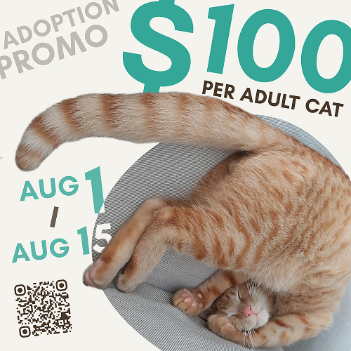
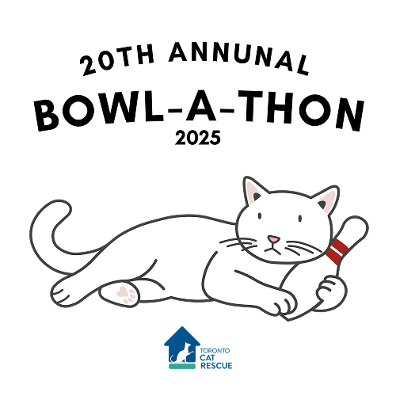

Postmodern Poster Series
Exaggerating everyday modern struggles through the satirical reframing of classical masterpieces.
The Inspiration
Ordinary human struggles—such as freezing cold showers, subway commutes, and sleepless nights—are amplified through the lens of classical art to highlight how ridiculous everyday modern life can be.
Postmodern Approach
Thriving on irony and appropriation, this series clashes iconic masterpieces by Van Gogh and Edvard Munch with bold commercial headlines like "START!" and "WAIT!" to break through advertising fatigue and build visual tension.

Every morning at TTC...

Every night at your desk...

When you turn on the faucet...
Hand Sanitizer Promo Video
Reframing a standard commodity product as an engaging, narrative-driven brand experience.
The Urban Insight
Living in Toronto, finding a public washroom is an ongoing frustration. This campaign exaggerates that exact anxiety through a dramatic journey across Toronto landmarks to offer a timely solution: hand sanitizer as your on-the-go washroom companion.
Versatile Ownership
Handled all phases of the creative lifecycle natively: serving as scriptwriter, storyboard director, editor, and lead protagonist. Utilized rapid pacing, heartbeat audio tracks, and granular visuals to isolate and share the narrative tension effectively.
PRESTO App Redesign
Bridging the gap between high adoption and low user satisfaction in the Greater Toronto Area transit application Ecosystem.
One-Hand Usability
Redesigned screen layouts to place key flows—like balance checks, quick top-ups, and active tickets—directly within natural thumb reach. Passengers can now complete essential actions comfortably with one hand while on the move.
Cross-Provider Fare Prediction
Integrated a GTFS-powered route planner that provides immediate trip cost breakdowns prior to onboarding. It calculates complex fares and free transfers across transit networks, ensuring complete price clarity before passengers enter terminals.
Transit Financial Advisory
Replaced static lookup sheets with interactive visual gauges that benchmark monthly passes against single-ride totals. Passengers receive instant cost-benefit insights, allowing them to confidently choose the best pass option for their budget.
Toronto Cat Rescue (TCR) Design Systems
Applying unified creative strategy, collateral design, and programmatic logic to urgent community animal rescue workflows.
Visual Identity & Marketing Packages
Designed professional, scalable outreach systems across multi-channel physical templates, banners, and commemorative souvenirs to heighten visibility for public adoption actions.
Redesigned complete corporate sponsorship decks and onboarding communication packages, boosting financial sponsor transparency and institutional credibility.
The Mobile Application Strategy
To eliminate information overload, this project transforms Toronto Cat Rescue's comprehensive desktop website into an intuitive, high-impact mobile experience.
By introducing priority-driven navigation and a zero-search interface, the app shortens user journeys, converts casual website visitors into an engaged community, and ensures vital rescue resources are always just one tap away.
Social Media Asset Systems
Newly designed social templates and energetic vibes optimized for target audience interactions.






Campaign Signage & Visual Enhancements
Identity layout adaptations following structural brand guidelines to increase recognition in public campaigns.
Horizontal Signage (Width: 800px)


Vertical Bookmarks (Height: 800px)


Corporate Communication & Sponsorship Packages
Visually consistent documents that strengthened outreach, improving brand credibility and event information clarity.
Document Template
Open Full PDFEvent Success Blueprint
Open Full PDFVolunteer Build System
Open Full PDFSecond Chance Chronicles
Open Full PDF
20th Annual Bowl-a-Thon 2025
"Saving Cats from the Gutter!"
Contributed directly to the event identity extension by translating core visual assets into merchandise configurations including custom event t-shirts, tote bags, and campaign promotional components. This systemic expansion successfully embedded the rescue network's visual footprint directly into daily community lifestyles, maximizing organic supporter engagement metrics throughout the seasonal campaign.
From Concept to Code:
A Fully Functional iOS Prototype
Built with Xcode and AI-assisted tools, this module transitions from high-fidelity Figma layouts into a fully functional application natively powered by Apple's Swift language framework. Designed around TCR's core brand guidelines, the application visualizes complex donation and adoption processes into finger-friendly interface nodes and frictionless interactive components.
- Strict Interface Architecture: Adheres fully to Apple's Human Interface Guidelines (HIG) to provide a premium, production-ready user experience.
- Advanced Security & States: Integrated native Keychain parameter controls alongside responsive user segmentation routines.
- Production-Grade Pipeline: Deployed adaptive responsive system constraints paired with a high-performance media caching backend infrastructure.
import SwiftUI
import CoreData
struct TCRAppWorkspace: View {
var body: some View {
WindowGroup {
MainExplorerView()
.environment(\.managedObjectContext,
cache.container.viewContext)
.preferredColorScheme(.dark)
}
}
}Expanding Connections, Building Opportunities
Active contributor and conversationalist across diverse community exchange networks and professional industrial conventions, including HCSA, TGST, TESTT, TYPEA, FITC, Game Industry XP, and the Adobe Creative Cafe.
"I am not afraid to engage with people of any age, race, gender, or background. I view every human interaction as a distinct, invaluable window to learn, synchronize, and unlock mutual long-term creative scale."